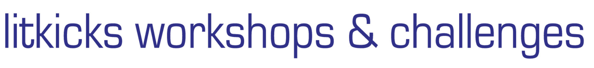

|
Literary Kicks |
|
|

There are no workshops currently running. If you were a workshop participant, you can still enter here to review the writings and critiques. Please check this page again soon for announcements of future workshops. |
|||||

|

|
|
|
The Freestyle Writing
Workshop is an engaging online experience for writers, poets,
playwrights and essayists wishing to improve their skills and receive
thoughtful feedback. The cost is US $20. The second session began on March 1, 2004 and ended on Friday, April 9, 2004.
If you are participating in the current workshop, enter here. The first Freestyle Workshop took place in November-December 2003. If you were a member of this workshop, you can view all pages from that session here. |
We are proud to announce the six winners and five honorable mentions who emerged from The QUEST, an experimental literary workshop/tournament that ran during October 2003. One hundred and fourteen writers participated in The Quest and we'd like to thank them all for their amazing work and great spirit. You can read the work by the six winners, the five honorable mentions and a few other QUEST writers on this page: Morning Talk Belief: Selections From The QUEST, or get to know the winning writers. |
| +
LitKicks Shoppe • Action Poetry (the LitKicks Book) • About LitKicks |